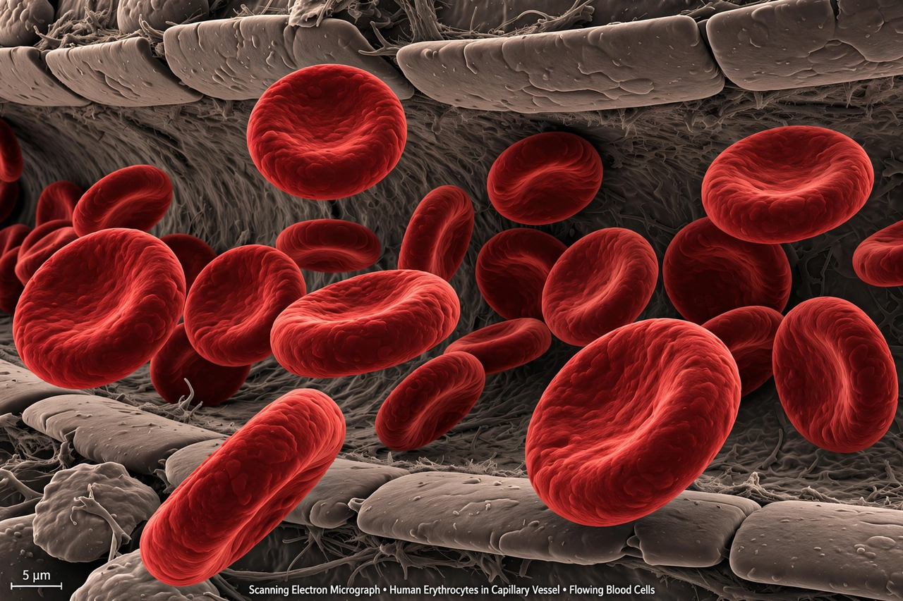

[Image placeholder: Red blood cells; a reduced count or haemoglobin level defines anaemia]**Anaemia** (American spelling: anemia) is a condition in which the number of red blood cells, or the concentration of haemoglobin within them, is lower than normal, reducing the blood's capacity to carry oxygen. It is a sign or symptom of underlying disease rather than a disease itself, and affects roughly a quarter of the world's population, especially children and women of reproductive age.
The commonest cause worldwide is iron deficiency; other causes include deficiencies of vitamin B12 and folate, chronic disease and inflammation, inherited disorders of haemoglobin such as thalassaemia and sickle-cell disease, blood loss, and bone-marrow failure. Symptoms include fatigue, pallor, breathlessness and palpitations; severe anaemia can cause heart failure.
Anaemia is diagnosed from a full blood count showing haemoglobin below WHO reference values (under 13 g/dL in men and 12 g/dL in non-pregnant women, approximately). Classification by red-cell size (microcytic, normocytic, macrocytic) guides investigation toward causes such as iron deficiency, B12 deficiency, haemolysis or marrow disease.
Treatment targets the cause: iron supplements or transfusion for deficiency and blood loss, B12 injections for pernicious anaemia, treatment of chronic disease, and erythropoietin in some kidney patients. Prevention includes dietary improvement, malaria control and deworming in endemic regions.